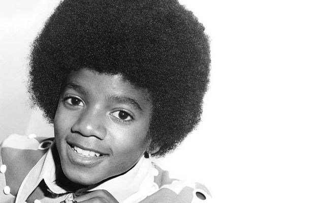
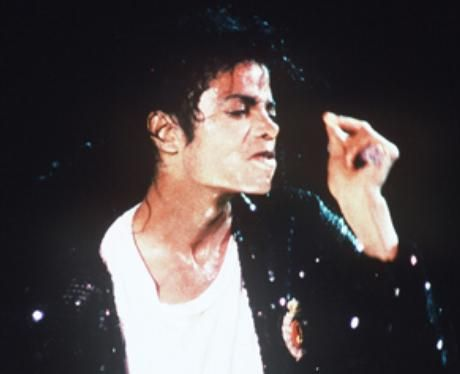
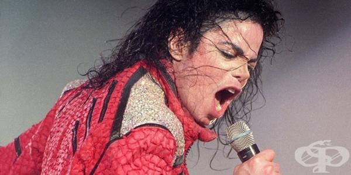

Майкъл Джоузеф Джаксън е роден в Гери, Индиана, САЩ. Той е седмото от общо девет деца на фамилията Джаксън. Освен него, в семейството му има още три момичета и пет момчета. Баща му, стоманолеяр, подтиква децата си да пеят от много рано. През 1993 година Майкъл Джаксън за първи път разказва за физическия и емоционален тормоз, на който е подложен като дете от страна на баща си в интервю с Опра Уинфри.Братята му Джаки, Тито и Джърмейн сформиратгрупата „The Jackson Brothers“. През 1964 г. Майкъл и Марлън се присъединяват към нея и я прекръстват на „The Jackson 5“, a още по-късно –на „The Jacksons“. В периода 1966 – 1968 г. често свирят встрийптийз-клубове и други нощни заведения. През 1968 г. подписват първия си договор с Motown Recordsи записват песните „I want you back“, „ABC“, „The Love You Save“ Упехът е зашеметяващ ивсички те достигат до номер едно в класациите на Billboard Hot 100. Списанието Rolling Stone нарича Майкъл Джаксън гений с невероятна музикална дарба. През 1971 г. албумите им са най-купуваните в САЩ. Братята записват 4 албума, но към края на 1973 година продажбите н амаляват и през 1975 г. те напускат Motown Records.

През 1975 година подписват нов договор, този път със CBS Records (по-късно Sony Music Entertainment) и Епик Рекърдс (Epic Records). От 1976 до 1984 г. издават още 6 албума. През 1979 г. „The Jacksons“ бият всички рекорди с албума си „Triumph“. Израстването на Майкъл: на 7 години става солист на състава, по-късно започва да пише много от хитовете на групата, на 11 години той вече е звезда, а на 20 решава да започне соло кариера.През 1978 г. Джаксън играе с Даяна Рос във филма „The Wiz“ в ролята на Плашилото. Там започва партньорството му с Куинси Джонс, който се съгласява да издаде първия му соло албум Off the wall, който излиза през следващата, 1979 година, и продава около 20 милиона копия в цял свят. Хитовете от този албум са „Don't Stop 'Til You Get Enough“ и „Rock with You“. Майкъл печели 3 награди на American Music Award в категорията „най-добър R&B изпълнител“, „най-добър R&B албум“ и „най-добър R&B сингъл“ и „Грами“ в категорията „най-добър R&B изпълнител“. Въпреки огромния успех за първи албум, той счита, че това не е достатъчно и обещава още по-голям успех със следващия си албум. През същата година Майкъл Джаксън чупи носа си при сложен танцов елемент. Първата пластична операция не е съвсем успешна, той се оплаква от проблеми с дишането и се налагат още няколко операции. Това е първата видима промяна, когато носът му става по-тесен

Майкъл Джоузеф Джаксън на английски: Michael Joseph Jackson, познат също като MJ, Краля на поп музиката,е американски музикален изпълнител, текстописец, продуцент, танцьор, хореограф, актьор и бизнесмен. Той е един от най-известните певци в света, а албумът му Thriller (1982 г.) е продаден в над 110 милиона копия, което го прави най-продаваният музикален албум в историята. Държи рекорд в историята на музиката за най-много спечелени в една година (1984 г.) статуетки от наградите Грами Той е вписан в книгата на световните рекорди на Гинес – общо с 15 награди „Грами“ и 17 номер едно сингли.Въвежда в музикалната индустрия така наречените short films, клипове-истории – каквито са Thriller, Bad, Remember the Time, You Rock My World, Ghosts и т.н.